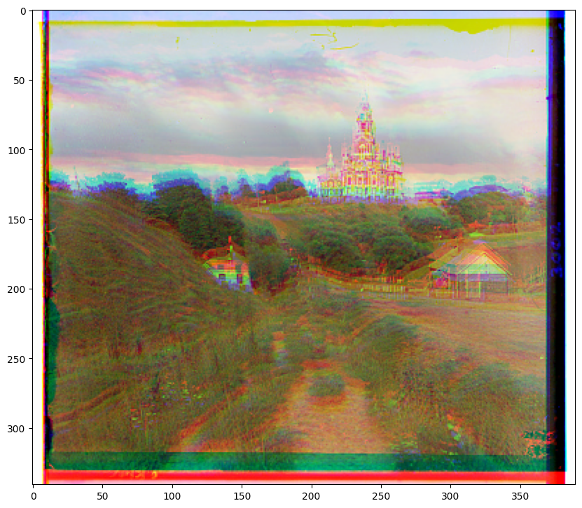
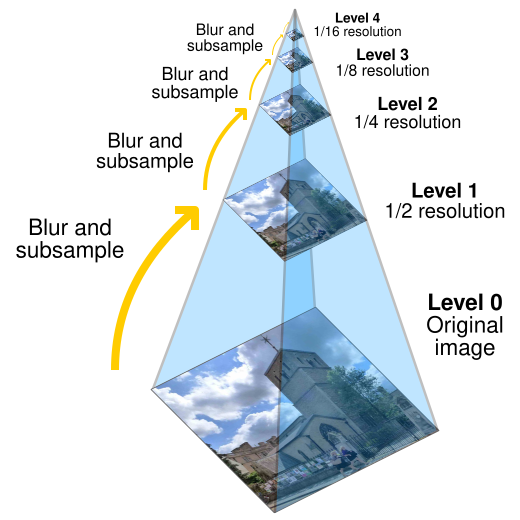

Project 1:
Colorizing the
Prokudin-Gorskii photo collection
Sergey Prokudin-Gorsky was Russian photographer, who was known for his effort to document 20th century Russia.
He traveled Russia and took photos of a wide range of scenes, objects and people. Even though this was long before color photography, he had the idea to record every scene onto a glass plate with a red, blue and green filter each. This way he would capture the red, green and blue channels of a scene seperately.
His plan was to use a projector with three different colors of lights, and project the three different colored image plates on top of each other, which would result in a color image.
These RGB glass plates survived and are currently in the possession of the Library of Congress. They have digitized the negatives, which is what we are going to use in this project to create the color images out of it.
- 1. Single-scale implementation with successful results on low-res images
- 2. Multiscale pyramid version that works on large images
- 3. My Thoughts on this
1. Single-scale implementation with successful results on low-res images
In the following I want to walk through the process of taking the three different color images and aligning them on top of each other correctly, to yield a clear color image. We first start with lower resulution images in the first party and then will try our hand on larger, more detailed images.
1.1 Preparation of the Images
We start off with one low resolution jpg images, which are scans of the three different colored glass plates stacked on top of each other.

Our first step is to slice them into 3 separate equal height images, so that we can project them on top of each other later.
The first image slice represents the blue glass plate, the second the green and the third the red glass plate.
Just slicing them and stacking them on top does not yield us with a satisfying result, since they are misaligned:
We need to align the images correctly, but how do we decide whether 2 images are similar to each other? The simplest method for the beginning is the following:
1.2 Finding the correct alignment
We can compare the intensity values of all the pixels using the NCC, to evaluate whether the images match. To search for a match we will just brute force the search, by np.roll(ing) the image inside a certain range. This means we first determine a range of x and y values we want to shift our image with, then we test every pixel shift with the fixed blue image plate and compare the NCC values. It is also possible to use the Euclidean loss, to evaluate whether the images match, but I found out that for our case, NCC yielded better results.
One thing we do, before we apply the NCC, is cropping out the corners, since the border of the glass plates don't yield us useful information. The borders don't allign and there is handwriting on them. I have decided to crop out 15% of the image height and width starting from the edges. So the first 7.5% and last 7.5% of the height and width. This is an empirically derived value. I have introduced this as the 'crop' parameter of my method. I calculated the NCC value of all the possible shifts in our search range, and selected the one with the best match.
As test range I have set 10% of our width and height. I am shifting our width and
height by -5% to 5% each, in search of the best intensity match. I have introduced this as the 'testrange' hyperparameter
of my method.
This is our result for the low resolution images:

Cathedral
Green displacement (x,y): (5 2)
Red displacement (x,y): (12 3)
Tobolsk
Green displacement (x,y): (3 3)
Red displacement (x,y): (6 3)
Monastery
Green displacement (x,y): (-3 2)
Red displacement (x,y): (3 2)
2. Multiscale pyramid version that works on large images
Now our goal is to align the large images. Trying our previous method on very large images that have a size of 3700x9700 takes too long. I tried to run it just for fun, but even after 20 minutes, I could not get a result.
2.1 Image Pyramids
What we could do here, is using a image pyramid. We basically downscale our image N times and use the same exact method from before to search for a match. Then we do multiply the optimal shift we found by 2 and use the N-1 downscaled version of our image to finetune our shift.
We do that N times to find the optimal shift. To get the optimal result, I have tried different testranges and different crops. The goal was to crop as much as possible away to save compute while still maintaining a good results. I also tried different layers of image pyramids (amount of upscales/downscales)
2.2 Finetuning variables and optimizations
I have received a good result with the following setting:
I scaled the image down 3 times (N=3) using a 3 layer image pyramid, used a testrange of testrange = 0.1 * 0.5 ** (N-Current_Layer) and a crop of crop = 1-0.6 * 0.5 ** (N-Current_Layer).
Calculating the NCC value for so many pixels takes a long time on a single thread, which is why I used pythons ThreadPoolExecutor() to use all the CPU cores of my laptop. This is the result I ended up with:
All the images were pretty good except for the emir image, of the old gentleman sitting in a chair
I have also provided the displacement of the green and red plates in regard to the blue plate under each
image
Church
Green displacement (x,y): (24 3)
Red displacement (x,y): (58 -4)
Emir
Green displacement (x,y): (48 23)
Red displacement (x,y): (-100 -48)
Harvesters
Green displacement (x,y): (59 19)
Red displacement (x,y): (123 16)
Icon
Green displacement (x,y): (41 18)
Red displacement (x,y): (89 23)
Lady
Green displacement (x,y): (54 6)
Red displacement (x,y): (113 10)
Melons
Green displacement (x,y): (83 9)
Red displacement (x,y): (179 12)
Onion Church
Green displacement (x,y): (50 26)
Red displacement (x,y): (107 37)
Sculpture
Green displacement (x,y): (33 -11)
Red displacement (x,y): (140 -27)
Self Portrait
Green displacement (x,y): (77 29)
Red displacement (x,y): (175 37)
Three Generations
Green displacement (x,y): (49 15)
Red displacement (x,y): (109 11)
Train
Green displacement (x,y): (42 6)
Red displacement (x,y): (85 32)
3. My Thoughts on this
While this yields good results, we still have one image, which is not alligned well. Despite using an image pyramid, it is still very compute intensive to compare each individual pixel intensity.
To better and more efficiently allign the images we should consider some structural hints like edges, for which we can use the simple sobel operator.